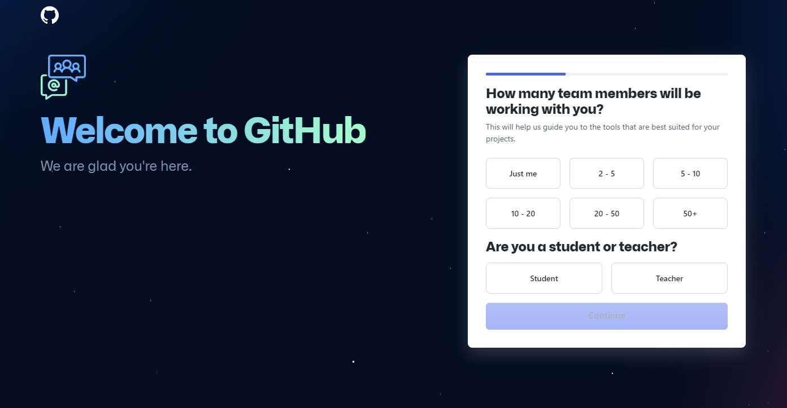

Этот шаг, по сути, продолжение предыдущего.
Как вы помните, на предыдущем шаге GitHub требовал от вас доказательств того, что вы не робот.
И, получив такие доказательства, позволил вам нажать на кнопку Create Account.
И к текущему шагу, я уверен, ваш аккаунт уже создан. Но GitHub не унимается и требует от вас доказательств того, что вы:
В общем, после создания аккаунта, наступает вторая стандартная фаза любого уважаемого ресурса:
Активация вашего аккаунта
Для этого GitHub вышлет вам проверочный код на email, о чем сообщит на следующей странице:

Чтобы активировать свой аккаунт, перейдите в свою почту и найдите письмо с кодом:
Замени картинку на ту, которая будет из ящика skills-improver
Введите код в поле, подождите совсем немного и, наконец-то, GitHub поприветствует вас!

Однако нас не столько волнует пафосная фраза — Welcome to GitHub
(мы, собственно, для нее и выполняли это упражнение), сколько вопросы с правой стороны страницы.
Давайте посмотрим на эти вопросы внимательнее.
Но смотреть на них мы будем уже на следующем шаге упражнения.